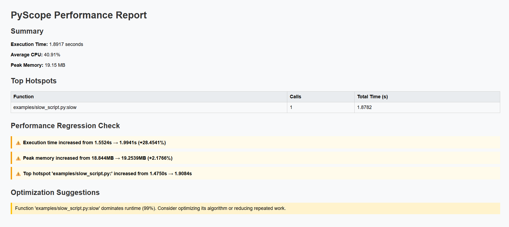

What is PyScope?
PyScope is a developer-oriented performance analysis tool designed to help identify bottlenecks in Python programs. Unlike traditional profilers that focus only on a single execution, PyScope tracks performance across multiple runs and detects regressions automatically.
Key Features
- 📊 Function-level hotspot profiling using
sys.setprofile - 🧠 Aggregated execution time, CPU usage, and peak memory
- 📈 Multi-run performance regression detection
- 📄 Automatic JSON & HTML report generation
- ⚡ Zero instrumentation — profile any Python script instantly
- 🧪 Designed for benchmarking, optimization, and experimentation workflows
Quick Start
Profile any Python script in one command:
python main.py your_script.pyPyScope automatically generates:
- CLI performance summary
- JSON report (
reports/json/) - HTML report (
reports/html/) - Regression analysis across historical runs
Sample Output
PyScope generates multiple forms of output to support both developer workflows and performance analysis over time. Below is a real example captured from profiling a slow Python script.
CLI Output
A concise command-line summary highlighting execution time, resource usage, hotspots, optimization hints, and regression warnings.
PyScope Performance Report
----------------------------------------
Execution Time : 1.8917 seconds
Average CPU : 40.91 %
Peak Memory : 19.15 MB
Top Hotspots
----------------------------------------
examples/slow_script.py:slow
Calls : 1
Total Time : 1.8782 seconds
Optimization Suggestions
----------------------------------------
• Function 'examples/slow_script.py:slow' dominates runtime (99%).
Consider optimizing its algorithm or reducing repeated work.
JSON report saved to : reports/json/pyscope_report_2025-12-16T12-26-04.603376.json
HTML report saved to : reports/html/pyscope_report_2025-12-16T12-26-04.603376.html
Performance Regression Check
----------------------------------------
⚠️ Execution time increased from 1.5524s → 1.9941s (+28.4541%)
⚠️ Peak memory increased from 18.844MB → 19.2539MB (+2.1766%)
⚠️ Top hotspot 'examples/slow_script.py:<module>' increased from 1.4750s → 1.9084s
JSON Report
A structured machine-readable report suitable for automation, dashboards, historical analysis, and research experiments.
{
"timestamp": "2025-12-16T12:26:04.603376",
"script": "examples/slow_script.py",
"execution_time": 1.8917008000425994,
"avg_cpu_percent": 40.90555555555555,
"peak_memory_mb": 19.15234375,
"hotspots": [
{
"function": "examples/slow_script.py:slow",
"calls": 1,
"total_time": 1.878245399799198
}
],
"suggestions": [
"Function 'examples/slow_script.py:slow' dominates runtime (99%).\nConsider optimizing its algorithm or reducing repeated work."
],
"regression": {
"status": "regression",
"messages": [
{
"level": "warning",
"text": "Execution time increased from 1.5524s → 1.9941s (+28.4541%)"
},
{
"level": "warning",
"text": "Peak memory increased from 18.844MB → 19.2539MB (+2.1766%)"
},
{
"level": "warning",
"text": "Top hotspot 'examples/slow_script.py:' increased from 1.4750s → 1.9084s"
}
]
}
} HTML Report
An interactive, human-readable HTML report that visualizes performance metrics, hotspots, optimization suggestions, and regression alerts in a single view.
Architecture Overview
- HotspotProfiler: Captures function call/return timing
- Runner: Manages execution, CPU & memory sampling
- MultiRunAnalyzer: Detects regressions across runs
- Report Engine: Serializes results to JSON & HTML
Why PyScope?
- Traditional profilers focus on single-run analysis
- PyScope treats performance as a time-series problem
- Built for experimentation, benchmarking, and optimization feedback loops